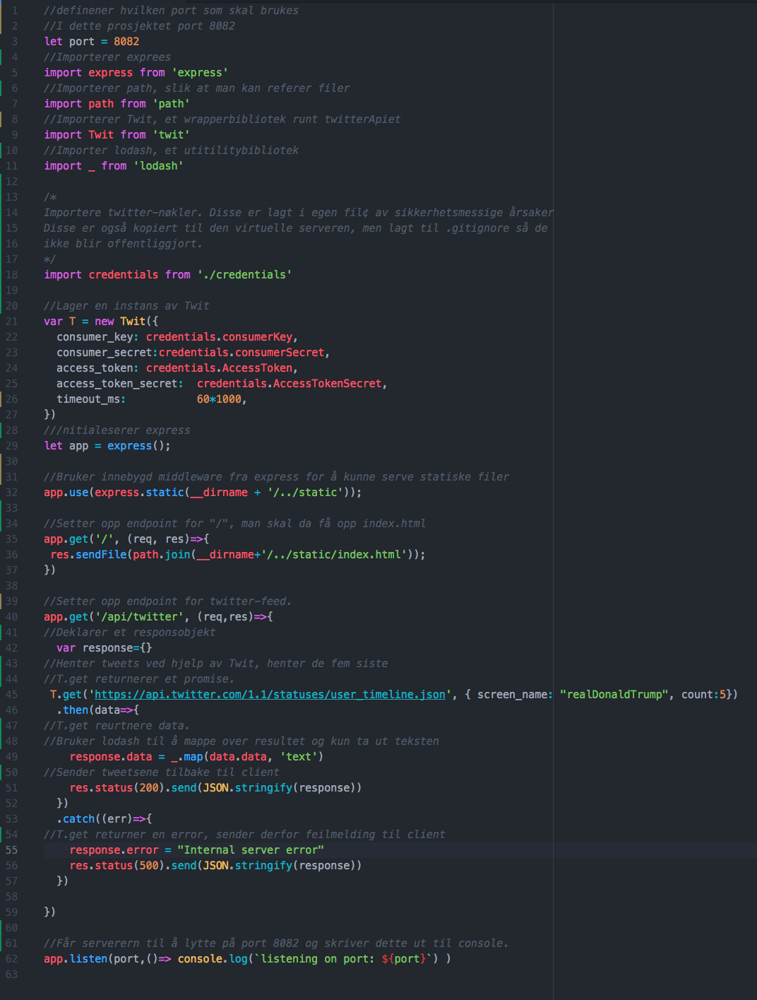

I dette prosjektet har vi brukt Node og express på serversiden. I tillegg har vi brukt transpilleren Babel og dev-verktøyet Nodemon. Babel har vi brukt slik at vi kan skrive i ES6. Konfigurasjonen for dette finnes under .babelrc og i package.json. Nodemon har vi brukt under utvikling så man slipper å starte serveren ved kræsj. Nodemon har også oversikt over hvilket files som er blitt oppdatert, og starter dermed serveren på nytt ved endring.
Serverkoden er dokumentert linje for linje i bildet under.
*Ettersom det ikke var lov til å bruke noen ferdigbygde ui-elementer er det importert som et bilde. Vi fullt klar over at dette ikke vises spesielt godt på mobil, men ettersom det tar lang tid å skulle lage egen highlighting, ble denne løsningen valgt
Prosjektet vårt finnes her http://it2810-27.idi.ntnu.no:8082.
Vi har brukt CSS Flexible Box Layout Module på de fleste av våre elementer. Menyen er flex-direction: row, mens .content er flex-direction:column.
Navigasjonsbaren er implementert fra bunn og html-delen for denne finnes i øverste del av body i static/index.html, css-delen finnes i static/css/index.css og ‘jQuery og js’-delen finnes i static/js/navigationBarMobile.js. Ytterligere kommentarer finnes i filene.
Ajax-funksjonalitet er brukt for å hente inn tweets fra @realDonaldTrump (Tweeter APIet) og for å hente i Bitcoin-prisen (Poloniex API)
Fra jQuery, har vi kun brukt basis-biblioteket
Web-siden har responsive web design og tilpasser seg skjermer/enheter av forskjellig størrelse ved bruk av display:flex; i .css-filene og @media queries.
Alle medlemmene i gruppa skal ha bidratt med kode, design, testing etc. Teammedlemene har hatt følgende oppgaver:
Hvert medlem har brukt rundt 30 timer på prosjektet, derav 10 er opplæringsvideo som er sett sammen, og 20 timer har gåttt ned i implementerings tid for hver enkelt.